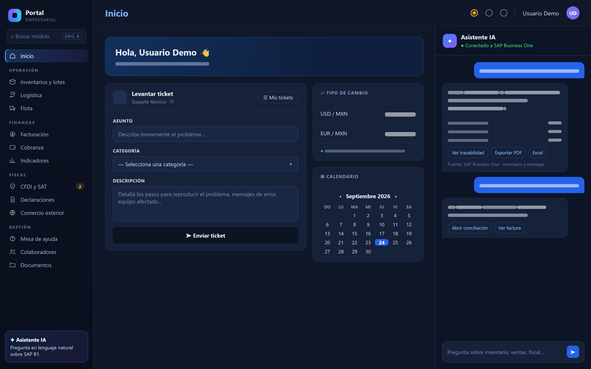
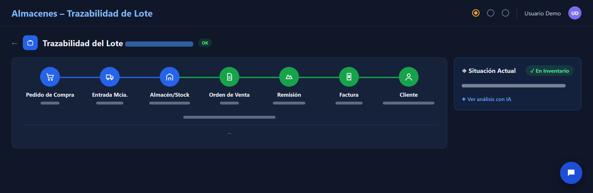
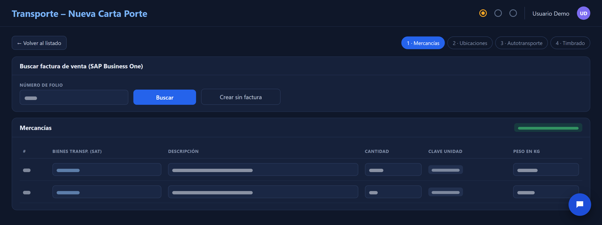
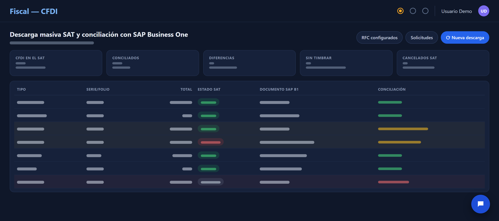
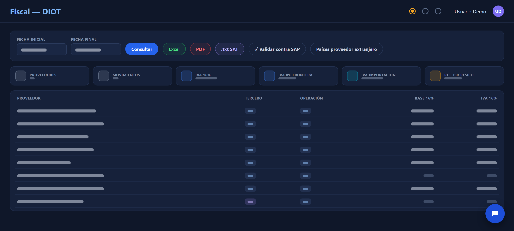
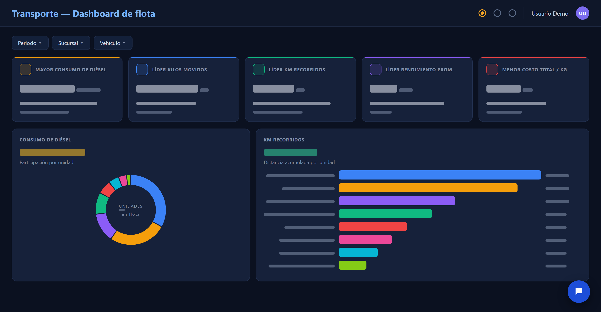

Calidad · Almacenes
Trazabilidad de lotes
Reto
Saber en segundos dónde está un lote y a quién se vendió.
Resultado
El recorrido completo del lote en una sola pantalla, listo para auditoría.
Herramientas
- SAP Business One
- Portal web
- IA
Jefe de Desarrollo · SAP Business One
Automatización · Integración · Soluciones Empresariales
Diseño e implemento soluciones tecnológicas orientadas a mejorar procesos empresariales, integrando SAP Business One, automatización, desarrollo web, datos e inteligencia artificial.
03Perfil
Mi experiencia se ha desarrollado principalmente alrededor de SAP Business One y los procesos empresariales que lo rodean. Mi enfoque consiste en entender la operación, identificar oportunidades de mejora y convertirlas en soluciones mediante integración, automatización, desarrollo y análisis de información.
La tecnología es el medio; el objetivo es resolver problemas reales de operación.
04Método
Un mismo proceso, de manual y disperso a integrado y en operación: Entender → Diseñar → Integrar → Automatizar → Validar → Implementar.
01 / 06Proceso actual: manual y disperso
05Proyecto principal
Plataforma empresarial (SIC) desarrollada para centralizar procesos, automatizar operaciones e integrar información con SAP Business One y servicios externos.






06Arquitectura
El portal no reemplaza a SAP Business One: lo extiende. Toda la información viaja por Service Layer y el ERP sigue siendo la fuente oficial.
07Proyectos
Cada proyecto parte de una necesidad concreta de la operación.
Calidad · Almacenes
Saber en segundos dónde está un lote y a quién se vendió.
El recorrido completo del lote en una sola pantalla, listo para auditoría.
Logística · Fiscal
Generar Carta Porte capturando la información a mano.
Carta Porte generada desde la factura de SAP, lista para timbrar.
Fiscal
Confirmar que cada factura de SAP esté correctamente ante el SAT.
Diferencias y facturas pendientes detectadas a tiempo.
Fiscal
Preparar la DIOT sin hojas de cálculo ni recaptura.
DIOT lista desde el portal y cuadrada con SAP.
Finanzas
Evitar la captura diaria del tipo de cambio.
Tipo de cambio actualizado solo, todos los días.
Datos
Tener información operativa sin exportar ni cruzar datos a mano.
Información confiable al momento para la operación y la dirección.
Reporting
Formatos que no mostraban lo que cada área necesitaba.
Documentos y reportes claros y consistentes.
Dirección
Indicadores armados a mano y desfasados.
Decisiones con datos actuales, por ejemplo sobre la flota.
Finanzas
Seguimiento de cartera en hojas de cálculo.
Visibilidad diaria de la cartera.
08Evidencia
Vistas del portal empresarial. Los datos son ficticios y el detalle se muestra de forma parcial.
Las imágenes y ejemplos mostrados han sido adaptados o anonimizados para proteger información confidencial, datos de clientes, configuraciones internas y credenciales.
09IA aplicada
La inteligencia artificial forma parte de mi metodología de trabajo como herramienta de apoyo para acelerar el desarrollo, el análisis de errores, la generación y revisión de código, las consultas SQL, la documentación y la construcción de soluciones.
El análisis funcional, las reglas de negocio, el diseño de la solución, las pruebas, la validación y la implementación permanecen bajo criterio profesional.
10Tecnologías
11Trayectoria
Cada etapa se construyó sobre la anterior.
2013
Soporte, instalación, migraciones y administración del ERP.
Evolución
Consultas, reportes, Transaction Notifications, SDK y procesos fiscales.
Portal empresarial
Procesos de la operación centralizados en una sola plataforma.
Integraciones
El ERP conectado con el portal y con servicios externos.
Automatización
Conciliación fiscal, tipo de cambio, validaciones y tareas programadas.
Actualidad
IA aplicada al desarrollo y a los procesos de la empresa.
11Contacto
Para conocer más sobre proyectos, soluciones e iniciativas relacionadas con tecnología empresarial.